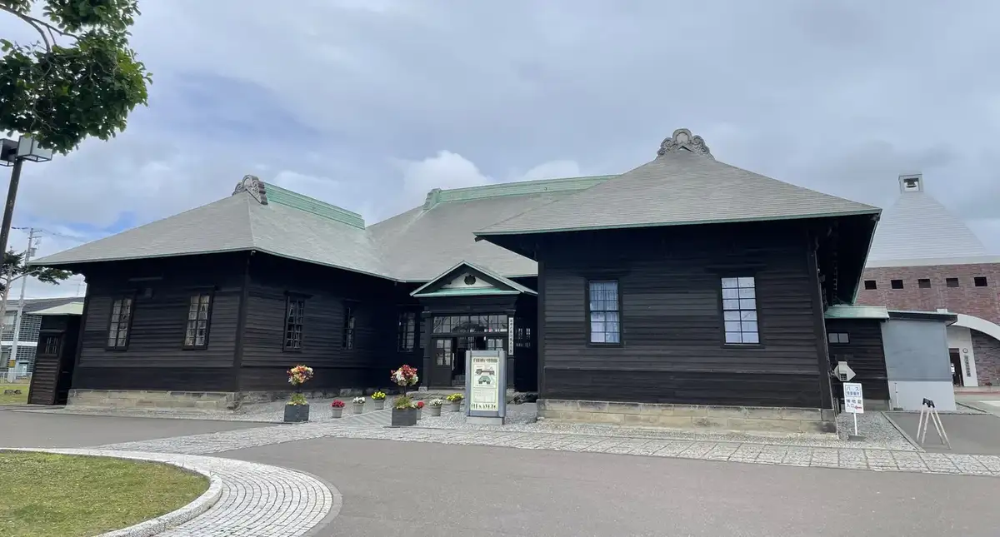
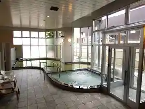
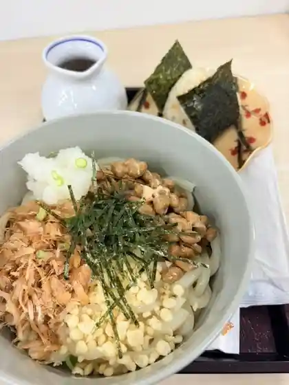
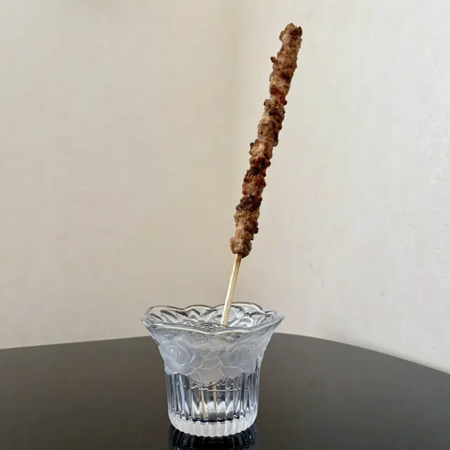
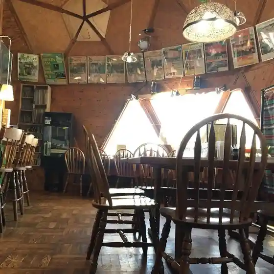
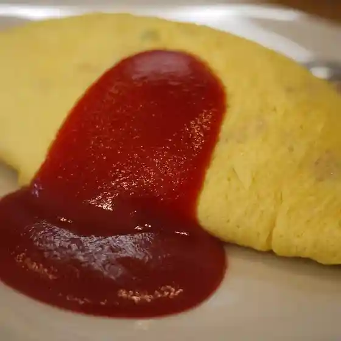
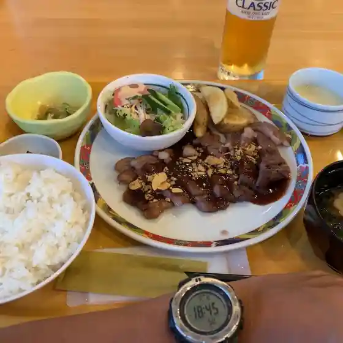
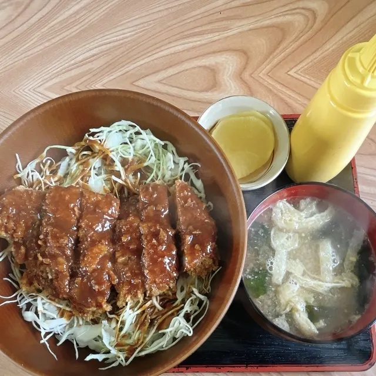

Tsukigata
Tsukigata · Hokkaido
Tsukigata
Highlighted on the Hokkaido map.

Stay
月形温泉ゆりかご

Tsukigata Onsen Yurikago
Dining
マンマルーナ

Manmaruuna
肉のさかい

Niku Nosakai
ゆづき

Yuzuki
やきとりボーイ 月形店

Yakitori Booi Tsukigata Mise
ダイナー テラ

Dainaa Tera
ポポット

Popotto
月形温泉ホテル レストラン

Tsukigata Onsen Hoteru Resutoran
ドライブイン 鶴八

Doraibuin Tsuruhachi
道の駅 275つきがた
Michi No Eki 275 Tsukigata
GOHANYAいぶくろ
Gohanya Ibukuro
レストハウス くうべぇ
Resutohausu Kuubee
ひなた屋
Hinata Ya
春の木
Haru No Ki
お米とおにぎり
O Kome Toonigiri
ねこやき堂
Nekoyaki Dou
萌木
Hou Ki
Aコープ つきがた店
A Koopu Tsukigata Mise
水辺の家
Suihen No Ie
えぞ藤
Ezo Fuji
ホーマック ニコット 月形店
Hoomakku Nikotto Tsukigata Mise
アートギャラリーポエム
Aatogyarariipoemu
月形温泉 ゆりかご
Tsukigata Onsen Yurikago
IL LAGO 月形店
Il Lago Tsukigata Mise